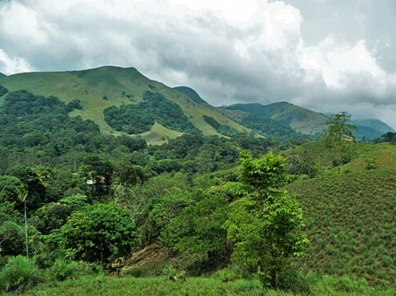

A Forest Worth Fighting For
"It’s extremely crucial in all respects to conserve the Western Ghats." -Madhav Gadgil, Ecologist and Chairman, Western Ghats Ecology Expert Panel
But these forests are being damaged by development, deforestation, and habitat loss.
Our Mission
Guardians of the Ghats is an environmental activist toolkit created for understanding the threats facing the Western Ghats and introducing methods to assist in protecting them.
FIELD NOTE: "At least 325 globally threatened species occur in the Western Ghats." - Wikipedia
Add Your Voice
What is one thing you think we should protect in the Western Ghats?